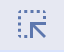

HTML & CSS Practice
DevTools Website Makeover
Ready to redesign your favourite brand?
Open your favourite website
and make your own temporary makeover by changing the text, colours, font size, and spacing.
Step-by-step instructions
Step 1: Open your favourite website
Open a website you like in a new browser tab.
Example: a news site, online shop, sports site, fashion brand or learning website.
Step 2: Open DevTools
Right-click on the page and choose Inspect.
You can also use the keyboard shortcut:
- Windows / Chromebook: Ctrl + Shift + I
- Mac: Cmd + Option + I
Step 3: Select an element
Click the selection tool in DevTools. It usually looks like an arrow inside a box.

Then click a heading, paragraph, button, image, or menu item on the website.
Step 4: Change some text
In the Elements panel, double-click some visible text and change it.
Example: change a heading to Welcome to my redesigned website.
Step 5: Change the colour
In the Styles panel, find or add a CSS colour rule.
Try changing:
color: red;or:
background-color: yellow;Step 6: Change the font size
In the Styles panel, try adding:
font-size: 40px;Watch what happens to the selected element.
Step 7: Change spacing
Try adding one of these CSS rules:
padding: 20px;margin: 30px;Notice how the element moves or gets more space around it.
Step 8: Take a screenshot
Take a screenshot of your changed website.
Remember: DevTools changes are temporary. If you refresh the page, your changes disappear.
Reflection questions
- What website did you choose?
- Which element did you inspect first?
- What text did you change?
- Which CSS change made the biggest visual difference?
- What happened when you refreshed the page?